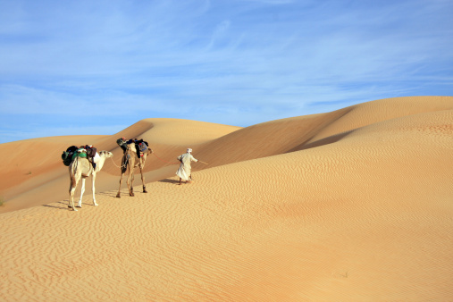
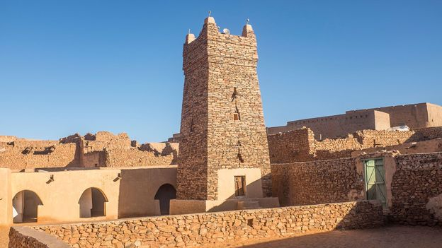

Mauritania
is a sovereign state in Northwest Africa. It
is bordered by the Atlantic Ocean to the west,
Western Sahara to the north and northwest, Algeria
to the northeast, Mali to the east and southeast, and
Senegal to the southwest. Mauritania is the eleventh
largest country in Africa, and 90 percent of its territory
is situated in the Sahara. Most of its population of 4.4
million lives in the temperate south of the country, with
roughly one third concentrated in the capital and largest city,
Nouakchott, located on the Atlantic coast.

Economy in Mauritania
Based on traditional extractive industries (iron, gold, copper), agriculture and fishing,
the Mauritanian economy has undergone a movement of diversification. It has resulted in
the exploitation of new resources (oil and gas), and the development of new sectors,
such as telecommunications, which have experienced average annual growth of 26%
since 20011. Gross domestic product Mauritanian income reached US$5.124 billion
in 20172. GDP per capita stands at $1,3003. The human development index was 0.513
in 20164 (157th out of 182 countries ranked) and a third of Mauritanians live below the
poverty line5. 40.3% of the active population is employed in the primary sector, 9.5% in
industry and mining, and 50.2% in services (2016). In value terms, in the same year, the
contribution of agriculture to GDP was 27.4%, that of industry and mining 30%, and that
of services 42.6%6.

Villes historiques en Mauritanie
Chinguetti offers visitors an exceptional architectural setting thanks to the richness of its history. A true crossroads of the Arab world, Black Africa and the Moors, the city is thus known as the city of libraries because it welcomed many scholars who created Koranic universities there. It thus brings together about ten libraries which mainly contain works dealing with the Koran, religion, science or literature, some of which date from the 9th century! Its magnificent mosque erected in the 13th century is also an essential monument for any visitor. However, although classified as a UNESCO World Cultural Heritage Site, the advance of the desert is a permanent threat and could see the city disappear under the sand within forty years.
